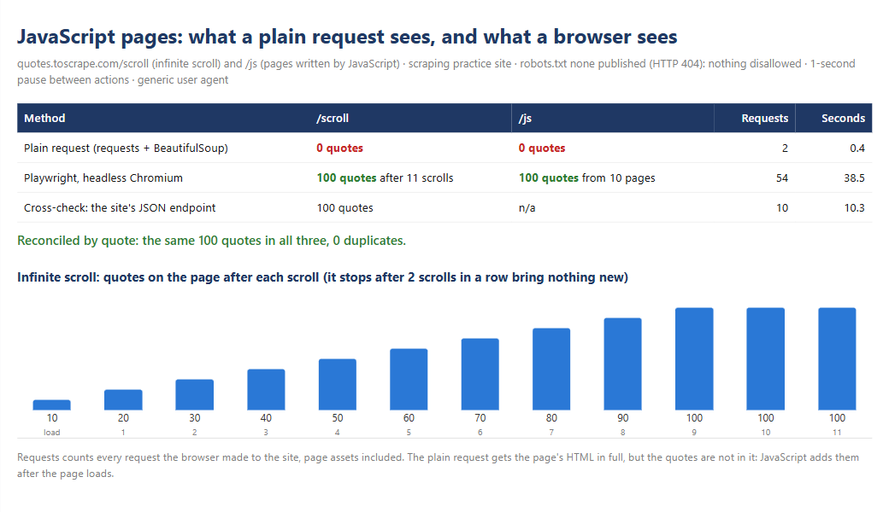

Playwright for JavaScript pages: infinite scroll read to the end, where a plain request sees nothing
Demo on a scraping practice site. The source is Quotes to Scrape, a sandbox built for people to practise web scraping. Its
/scrollpage loads quotes as you scroll, and its/jspages write the quotes with JavaScript.

| Task | Collect every item from pages built by JavaScript: an infinite-scroll feed and a paginated listing rendered in the browser. Prove the result is complete. |
| Solution | Playwright for Python driving headless Chromium: scroll until two scrolls in a row bring nothing new, render each page and follow "Next" · the same pages fetched with a plain request for comparison · result reconciled quote by quote against the site's own JSON endpoint |
| Records | 100 of 100 quotes from the infinite scroll and 100 of 100 from the 10 JavaScript pages; the plain request found 0 on both |
| Time | Infinite scroll in 26 seconds (11 scrolls, 1-second pause, 5-second wait for new items) · 10 JavaScript pages in 12 seconds |
What a plain request sees
A one-off script with requests and BeautifulSoup gets the full HTML of both pages, and 0 quotes. The
quotes are not in the HTML: on /scroll a script asks the server for them after the page loads, 10 at a
time, as the visitor reaches the bottom; on /js a script writes them into the page. Nothing fails, and
the CSV comes out empty or short. That silent failure is the risk.
What the browser does
- Infinite scroll. Playwright opens the page in headless Chromium, waits for the first quotes, then scrolls to the bottom and waits up to 5 seconds for the count to grow. It stops when two scrolls in a row bring nothing new, so a slow answer does not end the crawl early, and it does not scroll forever either. Measured: 10, 20, 30... 100 quotes, then two empty scrolls, then stop.
- JavaScript pages. It renders each page, reads the quotes once they exist and follows the "Next" link until there is none: 10 pages.
- Politely. robots.txt first (the site publishes none, so nothing is disallowed), a generic user agent, and at least 1 second between actions that make the page request something.
Proof that nothing is missing
| Method | /scroll |
/js |
Requests | Seconds |
|---|---|---|---|---|
| Plain request (requests + BeautifulSoup) | 0 quotes | 0 quotes | 2 | 0.4 |
| Playwright, headless Chromium | 100 quotes after 11 scrolls | 100 quotes from 10 pages | 54 | 38.5 |
| Cross-check: the site's JSON endpoint | 100 quotes | n/a | 10 | 10.3 |
The three results hold the same 100 quotes, compared by a key built from each quote's text and author, with 0 duplicates. The browser's request count includes page assets (scripts and stylesheets).
Output: scroll_quotes.csv · js_quotes.csv ·
run_summary.json · summary.html
The lightest tool that works
The scroll page gets its data from a JSON endpoint (/api/quotes?page=N). When an endpoint like that exists
and its use is allowed, reading it is faster and gentler than a browser: 10 requests instead of 14, no
Chromium. Here it serves as the cross-check. The browser is for pages that only exist after JavaScript runs
and have no usable endpoint behind them.
Run it
cd minicases/02-playwright-js-pages
python -m playwright install chromium # once
python -m jsquotes.run # the comparison above
pytest # 5 tests, offline: real Chromium on fake pages
The tests serve fake pages through Playwright's router, including a feed that stops after 4 batches, and check that the scroll loop stops after two empty scrolls and never asks for a batch past the last one.
Code: collect.py · run.py